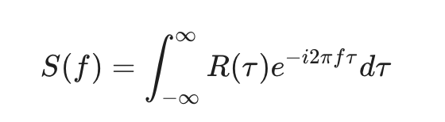
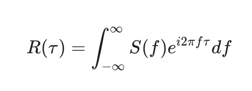

Research note · Spectral Analysis
Energy Spectrum and Autocorrelation
The relationship between the energy spectrum and the auto-correlation function: they are mathematical translations of the exact same information, just viewed from two different perspective. The auto correlation function views in the time domain, the energy spectrum views the data in the frequency domain. The fundamental bridge connecting these two domains is the Wiener-Khinchin Theorem, which state that the ACF and the energy spectrum form a Fourier transform pair.
The auto-correlation function: R(tau) measures how much a time series “remembers” its past. It quantifies the similarity between a signal and a delayed( or time-shifted) versioned of itself over a time lag tau.
High Auto-correlation means the signal is highly correlated with its past, it means it is relatively predictable, low auto-correlation means if the ACF drops to zero almost immediately, the signal has a very short memory, it is random and unpredictable from one step to next.
Mathematically, for a stationary signal x(t), it is the expected value of the signal multiplied by its time-shifted self: R(tau) = E[x(t) x(t+tau)] (assume mean is 0).
The energy spectrum, S(f), looks at that exact same data through the lens of frequency. Instead of asking about time lags, it asks: What ingredients (frequencies) were mixed together to create this signal, and how loud is each ingredient? Just as a prism splits white light into a rainbow of specific colors (frequencies), the energy spectrum breaks a complex, messy time series into a set of clean, simple sine and cosine waves. It tells you how much "energy" or variance in your data comes from slow, low-frequency cycles versus fast, high-frequency oscillations.
Because of the Wiener-Khinchin Theorem, we know that if we take the continuous Fourier transform of the auto-correlation function, we get the energy spectrum:

Conversely, if we know the energy spectrum, we can perfectly construct the auto correlation function by using the inverse Fourier transform:

.So, we will have some edges if we think about the problem in both domains.
Say there is a hidden, repeating cycle in a noisy time series. It might be difficult to spot just by looking at the raw data or even a messy ACF. However, if we take the Fourier transform of that ACF to get the energy spectrum, that cycle will show up as a massive, obvious "spike" at a specific frequency.
In the time domain, white noise has an ACF of zero everywhere except at a lag of tau = 0. When you pass this through the Fourier transform, the resulting energy spectrum is a perfectly flat horizontal line. This means white noise contains equal energy across all possible frequencies
If you want to remove microstructure noise from high-frequency price data, it is often easier to transform the data into the frequency domain, mathematically "delete" the high-frequency energy components, and then transform it back into the time domain.